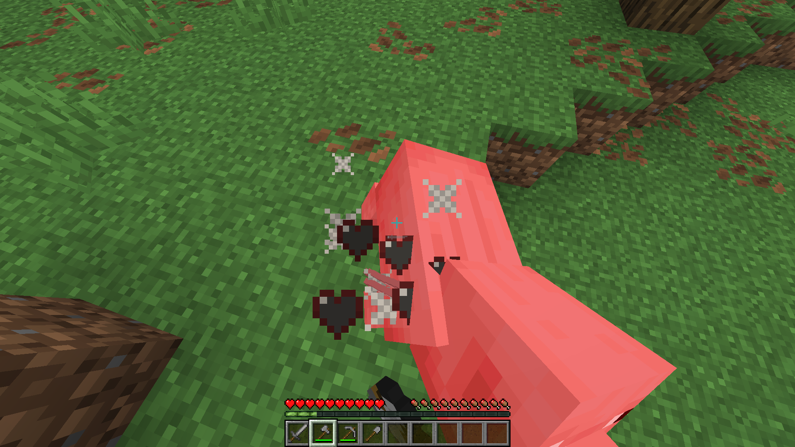

Reliable Food for a Long Minecraft Journey

Exploring is more enjoyable when a food shortage does not force an early return. A reliable routine combines a renewable source near home with a small, easy-to-carry reserve for trips away from it.
Start with a farm you can maintain
Plant a small crop plot near water and keep some harvested seeds or crops for replanting. A compact field is easier to harvest regularly than a huge one you neglect. If you keep animals, reserve space and food for breeding so your supply can recover over time. Use a chest nearby for spare seeds and harvested food.
Cook and pack before exploring
Cook suitable raw food when you have a furnace and fuel available. Before leaving, take enough food for the planned trip plus a modest backup. Store the rest at home instead of carrying every item you own. Keep the travel food in a consistent hotbar or inventory slot so it is easy to reach when needed.
Make the reserve easy to refill
When you return, put extra supplies away and replace what you used. Check the crop plot for mature plants and replant the harvested spaces. A sign or labeled chest can separate ready-to-eat meals from seeds and ingredients. This simple loop keeps you from accidentally eating the seeds you meant to plant and makes the next departure quicker.
- Keep a small renewable food source close to home.
- Pack travel meals and a backup before setting out.
- Replace what you used and replant harvested crops.